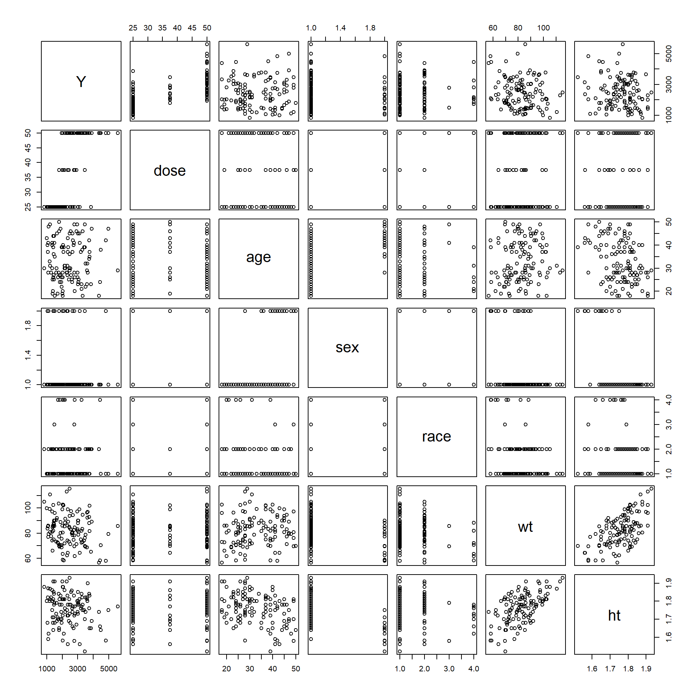
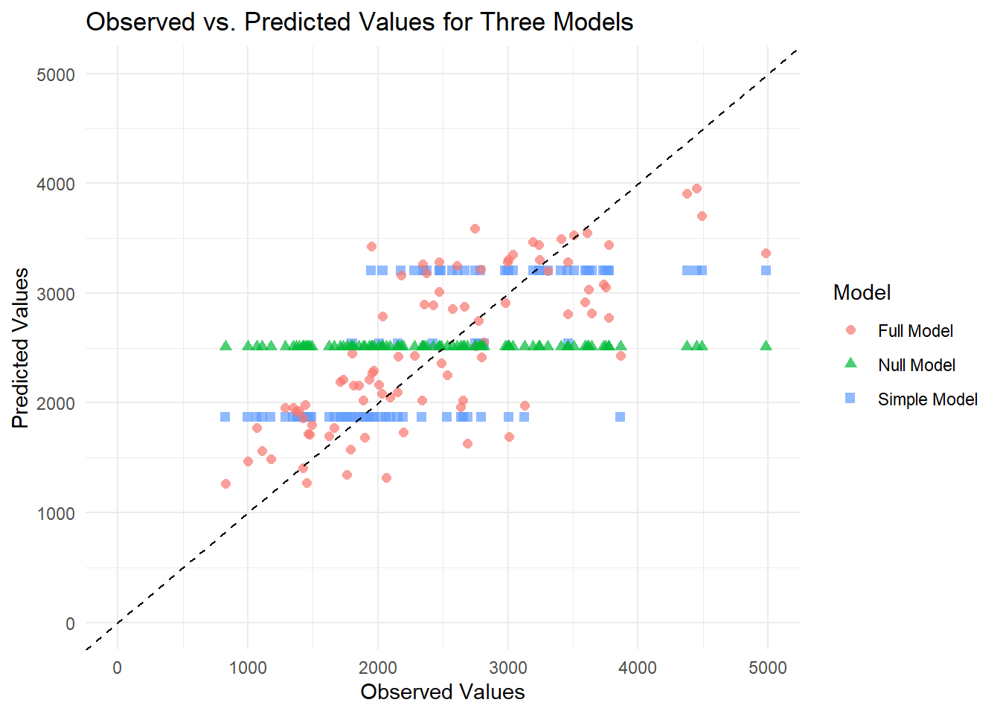
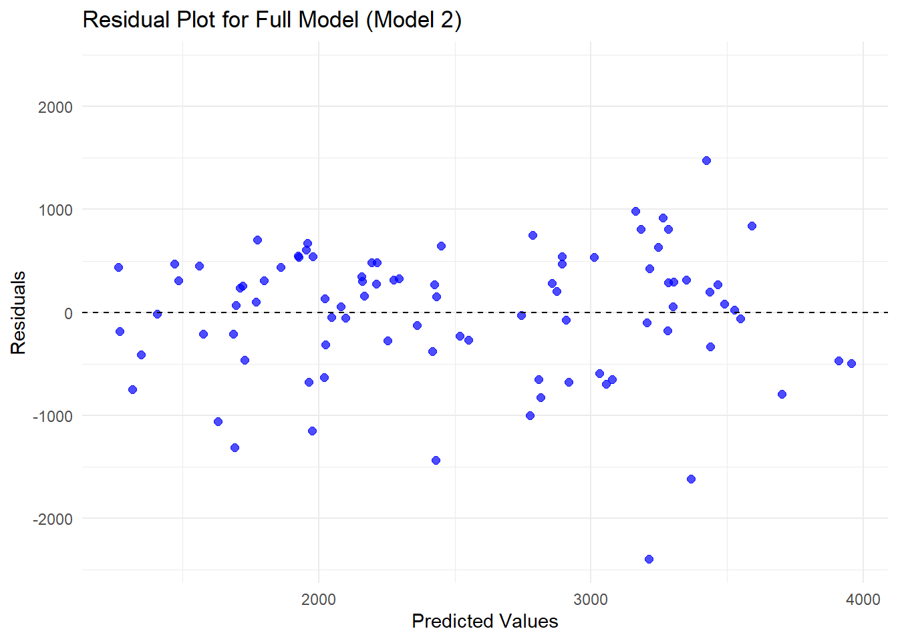
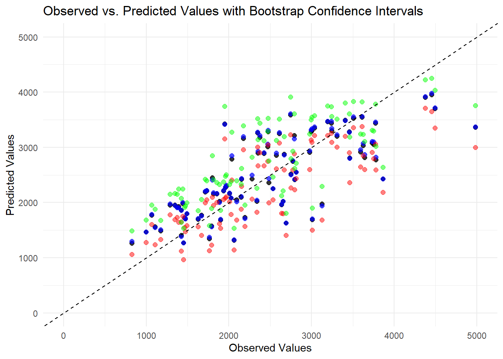
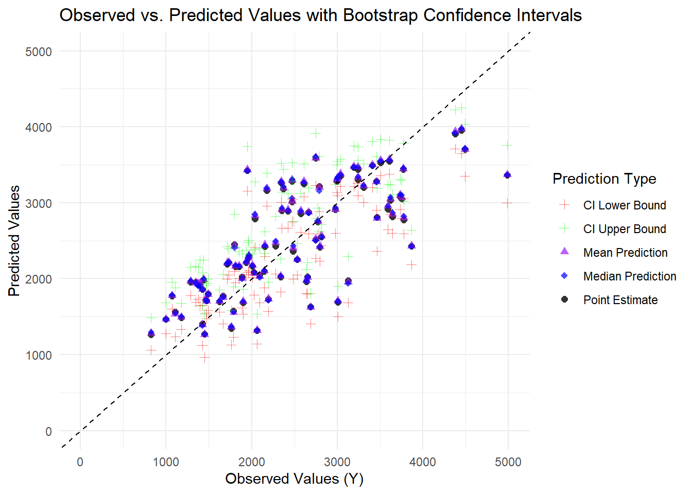
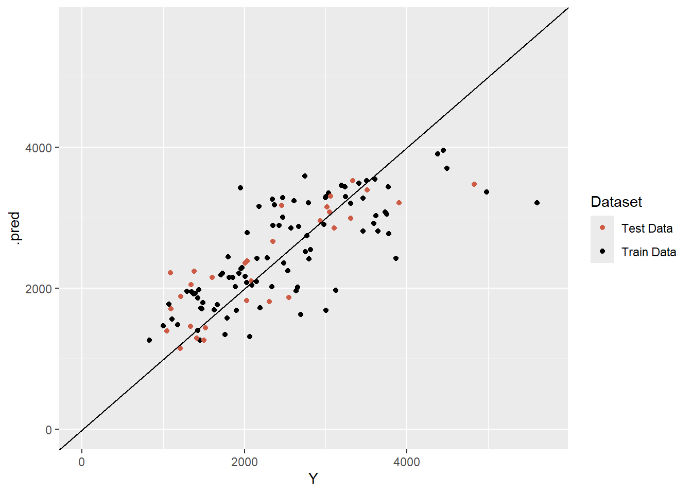

# plot time by dv for each id, stratified by doseplot <-ggplot(dat) +geom_line(aes(x=time, y=dv, group=id)) +facet_wrap(~dose)print(plot)
Initial processing
# keep only obs where occ=1dat1 <- dat %>%filter(occ ==1)
# exclude obs where time=0, sum dv for each iddat2 <- dat1 %>%filter(time !=0) %>%group_by(id) %>%summarize(Y =sum(dv) )# create df with time=0 obs onlydat3 <- dat1 %>%filter(time ==0)# join by iddat4 <-full_join(x=dat2, y=dat3, by="id")
# convert race and sex to factors# keep only Y, dose, age, sex, race, wt, htdat5 <- dat4 %>%mutate(race =factor(race),sex =factor(sex) ) %>%select( Y, dose, age, sex, race, wt, ht )str(dat5)
Boxplot of sex by height shows that sex 1 has larger values for height than sex 2
# pair plotpairs(dat5)

Pair plot shows general relationships between variables. Y seems positively associated with dose. Weight and height show a positive linear relationship.
Model Fitting
linear models
# linear model to Y using dosefit1 <- parsnip::linear_reg() %>% parsnip::fit( Y ~ dose, data=dat5 )broom::tidy(fit1)
# predict Yfit1_pred <-predict( fit1,new_data=dat5)# combine real data with predictionsfit1_result <- dat5 %>%select(Y, dose) %>%bind_cols(fit1_pred)# calculate rmsefit1_result %>% yardstick::rmse(truth=Y, estimate=.pred )
# A tibble: 1 × 3
.metric .estimator .estimate
<chr> <chr> <dbl>
1 rmse standard 666.
# calculate R squaredfit1_result %>% yardstick::rsq(truth=Y, estimate=.pred )
# A tibble: 1 × 3
.metric .estimator .estimate
<chr> <chr> <dbl>
1 rsq standard 0.516
RMSE = 666 and R-squared = 0.516
# linear model to Y using all predictorsfit2 <- parsnip::linear_reg() %>% parsnip::fit( Y ~ dose + age + sex + race + wt + ht, data=dat5 )broom::tidy(fit2)
# predict Yfit2_pred <-predict( fit2,new_data=dat5)# combine real data with predictionsfit2_result <- dat5 %>%select(Y, dose, age, sex, race, wt, ht) %>%bind_cols(fit2_pred)# calculate rmsefit2_result %>% yardstick::rmse(truth=Y, estimate=.pred )
# A tibble: 1 × 3
.metric .estimator .estimate
<chr> <chr> <dbl>
1 rmse standard 591.
# calculate R squaredfit2_result %>% yardstick::rsq(truth=Y, estimate=.pred )
# A tibble: 1 × 3
.metric .estimator .estimate
<chr> <chr> <dbl>
1 rsq standard 0.619
RMSE = 591 and R-squared = 0.619
The full model, with all predictors included, has a lower RMSE, which indicated lower error, then the reduced model, with dose as the only predictor. The full model also has a higher R-squared value, indicating a better fit then the reduced model.
logistic models
# logistic model to sex using dosefit3 <- parsnip::logistic_reg() %>% parsnip::fit( sex ~ dose, data=dat5 )broom::tidy(fit3)
The model has a ROC-AUC of 0.592 indicating predictive performance is low, just slightly better than random guessing.
# logistic model to sex using all predictorsfit4 <- parsnip::logistic_reg() %>% parsnip::fit( sex ~ Y + dose + age + race + wt + ht, data=dat5 )broom::tidy(fit4)
set.seed(rngseed)# put 75% of the data into the training set data_split <- rsample::initial_split(dat6, prop =3/4)# Create data frames for the two sets:train_data <- rsample::training(data_split)test_data <- rsample::testing(data_split)
Model Fitting
Part 1
# linear model to Y using dosefit5 <- parsnip::linear_reg() %>% parsnip::fit( Y ~ dose, data=train_data )broom::tidy(fit5)
# predict Yfit5_pred <-predict( fit5,new_data=train_data)# combine real data with predictionsfit5_result <- train_data %>%select(Y, dose) %>%bind_cols(fit5_pred)# calculate rmsefit5_result %>% yardstick::rmse(truth=Y, estimate=.pred )
# A tibble: 1 × 3
.metric .estimator .estimate
<chr> <chr> <dbl>
1 rmse standard 703.
# calculate R squaredfit5_result %>% yardstick::rsq(truth=Y, estimate=.pred )
# A tibble: 1 × 3
.metric .estimator .estimate
<chr> <chr> <dbl>
1 rsq standard 0.451
RMSE = 703 and R-squared = 0.451
# linear model to Y using all predictorsfit6 <- parsnip::linear_reg() %>% parsnip::fit( Y ~ dose + age + sex + wt + ht, data=train_data )broom::tidy(fit6)
# predict Yfit6_pred <-predict( fit6,new_data=train_data)# combine real data with predictionsfit6_result <- train_data %>%select(Y, dose, age, sex, wt, ht) %>%bind_cols(fit6_pred)# calculate rmsefit6_result %>% yardstick::rmse(truth=Y, estimate=.pred )
# A tibble: 1 × 3
.metric .estimator .estimate
<chr> <chr> <dbl>
1 rmse standard 627.
# calculate R squaredfit6_result %>% yardstick::rsq(truth=Y, estimate=.pred )
# A tibble: 1 × 3
.metric .estimator .estimate
<chr> <chr> <dbl>
1 rsq standard 0.562
RMSE = 627 and R-squared = 0.562
# compute rmse of null modelnull <- parsnip::null_model() %>% parsnip::set_engine("parsnip") %>% parsnip::set_mode("regression") %>% parsnip::fit(Y ~ ., data = train_data)# predict Ynull_pred <-predict( null,new_data=train_data)# combine real data with predictionsnull_result <- train_data %>%select(Y) %>%bind_cols(null_pred)# calculate rmsenull_result %>% yardstick::rmse(truth=Y, estimate=.pred )
# A tibble: 1 × 3
.metric .estimator .estimate
<chr> <chr> <dbl>
1 rmse standard 948.
RMSE = 948
Results
The RMSE of the full model is the lowest, at 627. This indicates that the full model is predicting values closer to the actual data than both the null and univariable models.
Part 2
# setup# fit model with resamplingset.seed(rngseed)# define linear model specificationmodel_spec <- parsnip::linear_reg() %>% parsnip::set_engine("lm") %>% parsnip::set_mode("regression")# define null model specificationnull_spec <- parsnip::null_model() %>% parsnip::set_engine("parsnip") %>% parsnip::set_mode("regression")# create foldsfolds <- rsample::vfold_cv(train_data, v =10)
# linear model to Y using dosefit_wf1 <- workflows::workflow() %>% workflows::add_model(model_spec) %>% workflows::add_formula(Y ~ dose)fit_rs1 <- fit_wf1 %>% tune::fit_resamples(folds)tune::collect_metrics(fit_rs1)
# A tibble: 2 × 6
.metric .estimator mean n std_err .config
<chr> <chr> <dbl> <int> <dbl> <chr>
1 rmse standard 691. 10 67.5 Preprocessor1_Model1
2 rsq standard 0.512 10 0.0592 Preprocessor1_Model1
RMSE = 691, SE = 67.5; R-squared = 0.512, SE = 0.0592
# linear model to Y using all predictorsfit_wf2 <- workflows::workflow() %>% workflows::add_model(model_spec) %>% workflows::add_formula(Y ~ dose + age + sex + wt + ht)fit_rs2 <- fit_wf2 %>% tune::fit_resamples(folds)tune::collect_metrics(fit_rs2)
# A tibble: 2 × 6
.metric .estimator mean n std_err .config
<chr> <chr> <dbl> <int> <dbl> <chr>
1 rmse standard 646. 10 64.8 Preprocessor1_Model1
2 rsq standard 0.573 10 0.0686 Preprocessor1_Model1
RMSE = 646, SE = 64.8; R-squared = 0.573, SE = 0.0686
→ A | warning: A correlation computation is required, but `estimate` is constant and has 0
standard deviation, resulting in a divide by 0 error. `NA` will be returned.
There were issues with some computations A: x1
There were issues with some computations A: x10
tune::collect_metrics(fit_rs_null)
# A tibble: 2 × 6
.metric .estimator mean n std_err .config
<chr> <chr> <dbl> <int> <dbl> <chr>
1 rmse standard 933. 10 76.7 Preprocessor1_Model1
2 rsq standard NaN 0 NA Preprocessor1_Model1
RMSE = 933, SE = 76.7
Results
The original RMSE value for the univariable model was 703, compared to the new value of 691. Using the cross-validation method to evaluate this model resulted in a better estimated fit. The standard error is 67.5, which is relatively large. This indicates that the RMSE varies considerably across folds, possibly suggesting an unstable model or high data variability.
The original RMSE value for the full model was 627, compared to the new value of 646. Using the cross-validation method to evaluate this model resulted in a weaker estimated fit. The standard error is 64.8, which is relatively large. This indicates that the RMSE varies considerably across folds, possibly suggesting an unstable model or high data variability.
The RMSE values for the null model are similar.
Changing the seed
# setup# fit model with resamplingset.seed(333)# define linear model specificationmodel_spec <- parsnip::linear_reg() %>% parsnip::set_engine("lm") %>% parsnip::set_mode("regression")# define null model specificationnull_spec <- parsnip::null_model() %>% parsnip::set_engine("parsnip") %>% parsnip::set_mode("regression")# create foldsfolds <- rsample::vfold_cv(train_data, v =10)
# linear model to Y using dosefit_wf1 <- workflows::workflow() %>% workflows::add_model(model_spec) %>% workflows::add_formula(Y ~ dose)fit_rs1 <- fit_wf1 %>% tune::fit_resamples(folds)tune::collect_metrics(fit_rs1)
# A tibble: 2 × 6
.metric .estimator mean n std_err .config
<chr> <chr> <dbl> <int> <dbl> <chr>
1 rmse standard 706. 10 48.1 Preprocessor1_Model1
2 rsq standard 0.484 10 0.0660 Preprocessor1_Model1
RMSE = 706, SE = 48.1; R-squared = 0.484
# linear model to Y using all predictorsfit_wf2 <- workflows::workflow() %>% workflows::add_model(model_spec) %>% workflows::add_formula(Y ~ dose + age + sex + wt + ht)fit_rs2 <- fit_wf2 %>% tune::fit_resamples(folds)tune::collect_metrics(fit_rs2)
# A tibble: 2 × 6
.metric .estimator mean n std_err .config
<chr> <chr> <dbl> <int> <dbl> <chr>
1 rmse standard 645. 10 52.7 Preprocessor1_Model1
2 rsq standard 0.566 10 0.0619 Preprocessor1_Model1
RMSE = 645, SE = 52.7; R-squared = 0.566, SE = 0.0619
→ A | warning: A correlation computation is required, but `estimate` is constant and has 0
standard deviation, resulting in a divide by 0 error. `NA` will be returned.
There were issues with some computations A: x1
There were issues with some computations A: x10
tune::collect_metrics(fit_rs_null)
# A tibble: 2 × 6
.metric .estimator mean n std_err .config
<chr> <chr> <dbl> <int> <dbl> <chr>
1 rmse standard 936. 10 69.1 Preprocessor1_Model1
2 rsq standard NaN 0 NA Preprocessor1_Model1
RMSE = 936, SE = 69.1
Results
Changing the seed results in different RMSE and SE values. For the univariable model, the new RMSE = 706, SE = 48.1; compared to the previous RMSE = 691, SE = 67.5. Note that if we had originally used this seed, we would have concluded that using cross-validation increases the RMSE for this model. For the full model, the new RMSe = 645, SE = 52.7; compared to the previous RMSE = 646, SE = 64.8. For the null model, the new RMSE = 936, SE = 69.1; compared to the previous RMSE = 933, SE = 76.7.
We will put the training data and predicted vales from the original models (no CV) into a data frame.
#Fit Models on Full Training Data (Not Using CV)# Simple Model: Using dose onlylm_simple <-linear_reg() %>%set_engine("lm") %>%set_mode("regression") %>%fit(Y ~ dose, data = train_data)# Full Model: Using All Predictorslm_full <-linear_reg() %>%set_engine("lm") %>%set_mode("regression") %>%fit(Y ~ ., data = train_data)# Null Model: Predicts the mean of Y for all observationsnull_spec <-null_model() %>%set_engine("parsnip") %>%set_mode("regression")null_fit <- null_spec %>%fit(Y ~1, data = train_data)
Using the models to extract the observed and predicted values
#Extract Observed & Predicted Values for Each Model#Get predictions for simple modelpred_simple <-predict(lm_simple, new_data = train_data) %>%bind_cols(train_data) %>%mutate(model ="Simple Model")#Get predictions for full modelpred_full <-predict(lm_full, new_data = train_data) %>%bind_cols(train_data) %>%mutate(model ="Full Model")#Get predictions for null model (mean prediction)pred_null <-predict(null_fit, new_data = train_data) %>%bind_cols(train_data) %>%mutate(model ="Null Model")#Combine Predictions into one dataframedf_pred <-bind_rows(pred_simple, pred_full, pred_null) %>%select(Y, .pred, model) # Keep observed values, predictions, and model label#Pritn the dataframeskim(df_pred)
Data summary
Name
df_pred
Number of rows
270
Number of columns
3
_______________________
Column type frequency:
character
1
numeric
2
________________________
Group variables
None
Variable type: character
skim_variable
n_missing
complete_rate
min
max
empty
n_unique
whitespace
model
0
1
10
12
0
3
0
Variable type: numeric
skim_variable
n_missing
complete_rate
mean
sd
p0
p25
p50
p75
p100
hist
Y
0
1
2509.17
950.11
826.43
1800.79
2398.30
3126.37
5606.58
▅▇▆▂▁
.pred
0
1
2509.17
552.12
1264.76
1965.60
2509.17
2987.48
3956.42
▂▅▇▅▁
#Create a plot for visualization (using ggplot)ggplot(df_pred, aes(x = Y, y = .pred, color = model, shape = model)) +geom_point(alpha =0.7, size =2) +# Scatter plot geom_abline(slope =1, intercept =0, linetype ="dashed", color ="black") +# 45-degree linescale_x_continuous(limits =c(0, 5000)) +scale_y_continuous(limits =c(0, 5000)) +labs(title ="Observed vs. Predicted Values for Three Models",x ="Observed Values",y ="Predicted Values",color ="Model",shape ="Model" ) +theme_minimal()
Warning: Removed 3 rows containing missing values or values outside the scale range
(`geom_point()`).

The three horizontal lines in the Simple Model that only included the Dose varible is likely owing to the fact that Dose only takes three values in the dataset (25, 37.5 and 50) as these were likely the only different increments tested. Thus we see the grouping in the predictions cause by these three groups.
As stated, model 2 (the full model with all predictors) has the best performance and seems to sow some affinity towards the 45 degree line but not a close association and we see more values weighted to the lower left and not an even distribution.
We will make a plot of the predicted vs the residuals (predicted-observed) for Model 2. We will add a straight line at 0.
# Compute residuals for the full model (Model 2)residuals_full <-predict(lm_full, new_data = train_data) %>%bind_cols(train_data) %>%mutate(residuals = .pred - Y) #Compute residuals#Find maximum residual value to set symmetric y-axis limitsmax_resid <-max(abs(residuals_full$residuals)) #Get max absolute residual#Create Residual Plotggplot(residuals_full, aes(x = .pred, y = residuals)) +geom_point(alpha =0.7, size =2, color ="blue") +#Scatter plot geom_hline(yintercept =0, linetype ="dashed", color ="black") +#Reference line at 0scale_y_continuous(limits =c(-max_resid, max_resid)) +#Symmetric y-axis limitslabs(title ="Residual Plot for Full Model (Model 2)",x ="Predicted Values",y ="Residuals" ) +theme_minimal()

We should see a general cloud of data with no real pattern for this. However that is not the case and we see some aggregation around the line (zero) and there are many negative numbers with higher values than the positive values.
Model predictions and uncertainty
We are going to focus on model 2 going forward as it has better performance.
We are going to use a bootstrap method to help us sample the data and fit the model to the data. We start by reseting the seed to 1234 and create 100 bootstraps using the training data. We will then fit the model to these bootstrap samples and make predictions from the model for the original training data.
#Reset random seed for reproducibility - 1234set.seed(1234)#Create 100 bootstrap samples from training databoot_samples <-bootstraps(train_data, times =100) #Creates 100 bootstrap datasets from training data#Define a function to fit Model 2 and make predictions and to extract the training data from the bootstrap samplefit_and_predict <-function(split) {boot_train <-analysis(split) #Extract training set from bootstrap sample lm_boot <-linear_reg() %>%#Fit the Full Model to the bootstrap training setset_engine("lm") %>%set_mode("regression") %>%fit(Y ~ ., data = boot_train)predict(lm_boot, new_data = train_data) %>%#Predict on original training datapull(.pred)} #Extract predicted values as a numeric vectorboot_preds <-map(boot_samples$splits, fit_and_predict) #Apply model to each bootstrap sample & store predictions#Convert list of predictions to data frameboot_pred_df <-as.data.frame(do.call(cbind, boot_preds))colnames(boot_pred_df) <-paste0("boot_", seq(1, length(boot_preds))) #Label columns#Add original observed values for referenceboot_pred_df <-bind_cols(train_data %>%select(Y), boot_pred_df)#Print a preview of the bootstrap predictionsprint("First few rows of bootstrap predictions:")
Above we see a preview of the bootstrap predictions that we modeled.
We will now calculate the mean, median and confidence intervals for the bootstrap predictions and generate a dataframe with this and provide a summary/overview of this dataframe of these values combined with Y (observed vaues).
#Convert list of predictions to a matrix (for easier calculations)pred_matrix <-do.call(cbind, boot_preds) #convert list to a matrixcolnames(pred_matrix) <-paste0("boot_", seq(1, ncol(pred_matrix))) #label columns#Compute Mean, Median & 89% Confidence Intervalspreds <- pred_matrix %>%apply(1, function(x) {c(Mean_Prediction =mean(x), quantile(x, c(0.055, 0.5, 0.945)))}) %>%t() #Transpose to align columns correctly#Convert to dataframe and add `Y` pred_summary <-as.data.frame(preds) %>%rename(Mean_Prediction =`Mean_Prediction`,CI_Lower_89 =`5.5%`,Median_Prediction =`50%`,CI_Upper_89 =`94.5%`) %>%mutate(Y = train_data$Y) #We will verify this step because differences in size will cause failure in the following steps#Verify data structure to ensure correct fixprint(paste("Size of train_data:", nrow(train_data))) #Should be 90
[1] "Size of train_data: 90"
print(paste("Size of pred_summary:", nrow(pred_summary))) #Should also be 90
[1] "Size of pred_summary: 90"
print("First few rows of bootstrap prediction summary with Y:")
[1] "First few rows of bootstrap prediction summary with Y:"
'data.frame': 90 obs. of 5 variables:
$ Mean_Prediction : num 3327 1944 2758 2074 2914 ...
$ CI_Lower_89 : num 3095 1692 2590 1783 2665 ...
$ Median_Prediction: num 3336 1945 2765 2086 2933 ...
$ CI_Upper_89 : num 3547 2166 2931 2385 3138 ...
$ Y : num 3004 1347 2772 2028 2353 ...
We will now geenrate a plot to visualise the data. We want to evaluate the observed values, the point estimates and the calcuated statistics from the bootstrap predictions. We plot the Observed vs Predicted values wirh bootstrap confidence intervals, mean and median statistics.
#Get Original point estimate from the full model (Model 2)point_estimates <-predict(lm_full, new_data = train_data) %>%bind_cols(train_data) %>%rename(Point_Estimate = .pred) #Rename prediction column#Use left_join() to ensure correct data alignment matched based on Ypred_plot_data <- point_estimates %>%left_join(pred_summary, by ="Y") %>%select(Y, Point_Estimate, Median_Prediction, CI_Lower_89, CI_Upper_89) #Create plot for visualizationggplot(pred_plot_data) +#black dots for original point estimatesgeom_point(aes(x = Y, y = Point_Estimate), color ="black", size =2, alpha =0.8) +# Blue dots for bootstrap median predictionsgeom_point(aes(x = Y, y = Median_Prediction), color ="blue", size =2, alpha =0.7) +# Red dots for lower bound of 89% confidence intervalgeom_point(aes(x = Y, y = CI_Lower_89), color ="red", size =2, alpha =0.5) +# Green dots for upper bound of 89% confidence intervalgeom_point(aes(x = Y, y = CI_Upper_89), color ="green", size =2, alpha =0.5) +# Add a 45-degree line (ideal case where predicted = observed)geom_abline(slope =1, intercept =0, linetype ="dashed", color ="black") +# Ensure x and y axes match for comparisonscale_x_continuous(limits =c(0, 5000)) +scale_y_continuous(limits =c(0, 5000)) +# Labels and themelabs(title ="Observed vs. Predicted Values with Bootstrap Confidence Intervals",x ="Observed Values", y ="Predicted Values", color ="Prediction Type") +theme_minimal()
Warning: Removed 1 row containing missing values or values outside the scale range
(`geom_point()`).
Removed 1 row containing missing values or values outside the scale range
(`geom_point()`).
Removed 1 row containing missing values or values outside the scale range
(`geom_point()`).
Removed 1 row containing missing values or values outside the scale range
(`geom_point()`).

It is hard to distinguish all of the different points without a legend and to see some of the colours. So the same plot will be generated using different symbols and providing a legend.
#Get original point estimate from the full model (Model 2)point_estimates <-predict(lm_full, new_data = train_data) %>%bind_cols(train_data) %>%rename(Point_Estimate = .pred) #Rename prediction column#Ensure Correct data alignment Using left_join()pred_plot_data <- point_estimates %>%left_join(pred_summary, by ="Y") %>%select( Y, #Observed values Point_Estimate, #Original model predictions Mean_Prediction, #Mean bootstrap prediction Median_Prediction, #Median bootstrap prediction CI_Lower_89, #Lower 89% confidence interval CI_Upper_89) #Upper 89% confidence intervalggplot(pred_plot_data, aes(x = Y)) +# Black dots for original point estimates (Model 2 predictions)geom_point(aes(y = Point_Estimate, color ="Point Estimate", shape ="Point Estimate"), size =2, alpha =0.8) +# Purple dots for mean bootstrap predictiongeom_point(aes(y = Mean_Prediction, color ="Mean Prediction", shape ="Mean Prediction"), size =2, alpha =0.7) +# Blue dots for bootstrap median predictionsgeom_point(aes(y = Median_Prediction, color ="Median Prediction", shape ="Median Prediction"), size =2, alpha =0.7) +# Red dots for lower bound of 89% confidence intervalgeom_point(aes(y = CI_Lower_89, color ="CI Lower Bound", shape ="CI Lower Bound"), size =2, alpha =0.5) +# Green dots for upper bound of 89% confidence intervalgeom_point(aes(y = CI_Upper_89, color ="CI Upper Bound", shape ="CI Upper Bound"), size =2, alpha =0.5) +# Add a 45-degree line (ideal case where predicted = observed)geom_abline(slope =1, intercept =0, linetype ="dashed", color ="black") +scale_x_continuous(limits =c(0, 5000)) +scale_y_continuous(limits =c(0, 5000)) +# Manually define colors and shapes with proper legendscale_color_manual(name ="Prediction Type", values =c("Point Estimate"="black","Mean Prediction"="purple","Median Prediction"="blue","CI Lower Bound"="red","CI Upper Bound"="green")) +scale_shape_manual(name ="Prediction Type", values =c("Point Estimate"=16,"Mean Prediction"=17,"Median Prediction"=18,"CI Lower Bound"=3,"CI Upper Bound"=3 )) +# Labels and themelabs(title ="Observed vs. Predicted Values with Bootstrap Confidence Intervals", x ="Observed Values (Y)",y ="Predicted Values") +theme_minimal()
Warning: Removed 1 row containing missing values or values outside the scale range
(`geom_point()`).
Removed 1 row containing missing values or values outside the scale range
(`geom_point()`).
Removed 1 row containing missing values or values outside the scale range
(`geom_point()`).
Removed 1 row containing missing values or values outside the scale range
(`geom_point()`).
Removed 1 row containing missing values or values outside the scale range
(`geom_point()`).

Model 2 seems to capture the trend of observed vs predicted (the 45% line) quite well although not perfectly. The values from the bootstrap sampling median and mean demonstrate a similar pattern and so that shows the bootstrap sampling did not significantly shift the trend. The confidence intervals also follow this general tredn and are quite close which might indicate that the models predictions are quite stable in many cases (although the gap increases in some areas).
Part 3
Final evaluation using test data
# use model 2 to predict for test datapred_test <-predict( fit6,new_data=test_data)# combine real data with predictionstest_result <- test_data %>%select(Y, dose, age, sex, wt, ht) %>%bind_cols(pred_test)
# plot predicted vs observed for both training data and test dataggplot() +geom_point(data=fit6_result, aes(x=Y, y=.pred, color="Train Data")) +geom_point(data=test_result, aes(x=Y, y=.pred, color="Test Data")) +geom_abline(slope =1, intercept =0) +scale_x_continuous(limits=c(0,5700)) +scale_y_continuous(limits=c(0,5700)) +scale_color_manual(values =c("Train Data"="black", "Test Data"="coral3"), name="Dataset")

Results
Based on the metrics, the multivariable model performs better than the null model. The RMSE of the full model is 627, with an R-squared of 0.562, which is an improvement over the null model’s RMSE of 948. A smaller RMSE indicates that the full model predicts values closer to the actual data than the null model. The R-squared value means that the full model explains 56.2% of the variation in the data beyond what the null model accounts for.
The univariable model with dose also performs better than the null model, with an RMSE of 706 and an R-squared value of 0.451. Compared to the null model, the smaller RMSE suggests that the univariable model predicts values closer to the actual data. The R-squared value indicates that the univariable model explains 45.1% of the variation in the data beyond the null model. The univariable model is useful for quantifying and visually representing the effect of dose on the outcome. However, beyond this, its practicality may be limited, as the full model demonstrates that in real data, factors beyond dose influence the outcome.
Comparing the metrics of the multivariable and univariable models shows that the multivariable model has a smaller RMSE and a larger R-squared. This suggests that the full model predicts values more accurately than the univariable model and explains more of the variation in the data beyond the null model. This result aligns with the general expectation that as the number of predictors in a model increases, so does the model’s fit.
Importantly, using train and test datasets reveals that the full model does not appear to be overfitting the training data. This is a crucial feature to assess when evaluating the practicality of a model. If one aims to determine an appropriate drug dose for an individual based on their characteristics, the full model could be useful in practice.